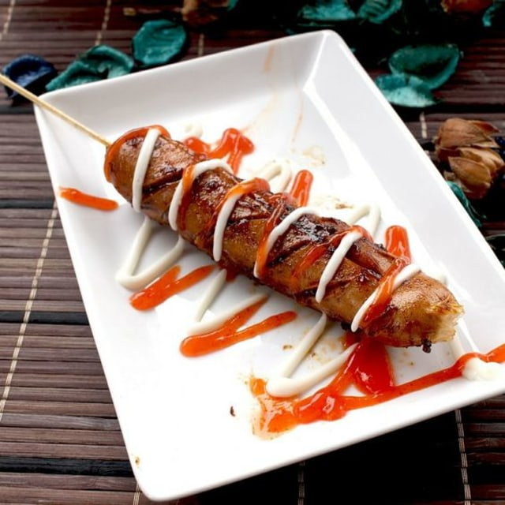
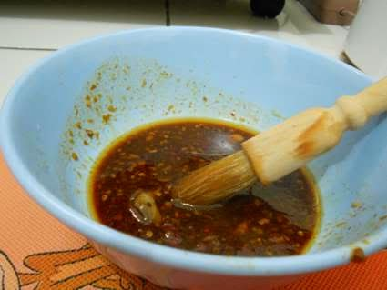
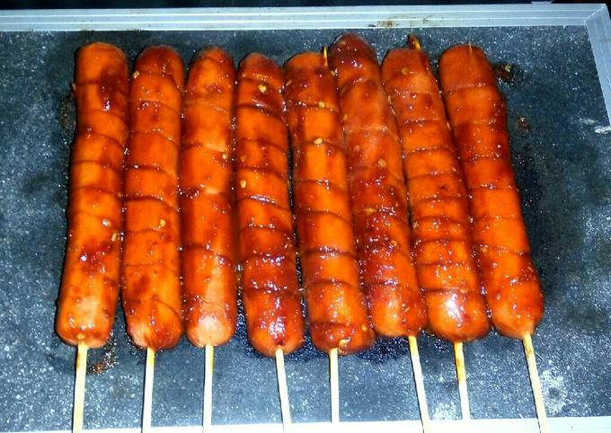
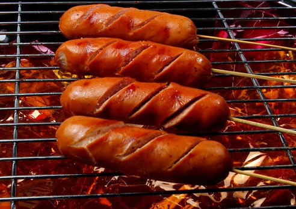
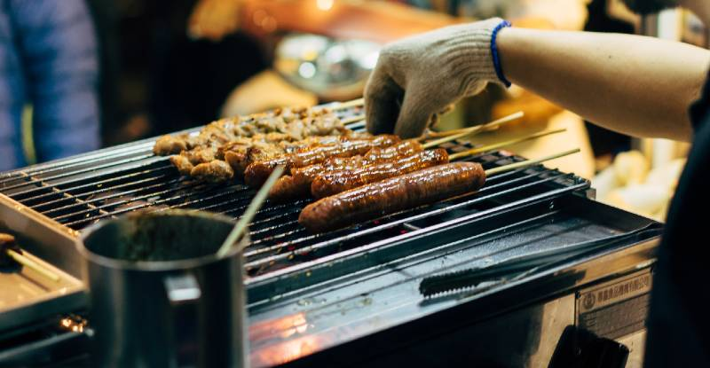

Resep Sosis Bakar

Bahan Bahan :
- Sosis yang sudah dipotong dan dicuci bersih
- Bumbu Celup Sosis
- Saos/Mayonaise
Langkah Langkah :
- Siapkan Sosis yang sudah dicuci bersih dan berikan tusukan di tengahnya
- Siapkan Bumbu celup dan Lumuri sosis dengan bumbu tersebut sampai merata

- Bakar Sosis yang sudah dibumbui hingga matang dan bumbu meresap sempurna

- Angkat sosis yang sudah matang, lalu sajikan dipiring dengan diberi tambahan Saos atau Mayonaise
